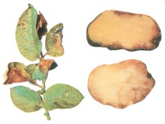

Burgonyavész (paradicsomvész)
Phytophthora infestans
A paradicsom és burgonya egyik legveszélyesebb betegsége, amely a
levelek szélén szabálytalan szürkészöld foltokat okoz. Párás körülmények
között a levélfonákon a gomba fehér konidiumtartói jelennek meg. Száraz időben a
foltok barnán beszáradnak, míg nedves körülmények között a levél feketén
elrothad. A paradicsom bogyója legtöbbször a kocsány felől, esetleg seben át
fertőződik, ekkor azon barna, kemény, húsba mélyedő foltok keletkeznek. A
talajrepedéseken át a rajzóspórák a gumót is fertőzhetik, s azon ólomszürke, kb.
1 cm mélyre hatoló szárazrothadást eredményez. A kórokozó növényi maradványokon
telel át - gyakran a burgonyagumón. Általában a burgonyasorok záródása után
jelenik meg a fiziológiailag idősebb leveleken. Innét szél útján terjed a
szabadföldi paradicsom- és természetesen másik burgonyatáblákra is. A kórokozó
fejlődéséhez kedvező időjárás esetén - 12-20 fokos hőmérséklet, csapadék -
járvány, s ennek következtében 10-30% termésveszteség keletkezhet.
A kár annál nagyobb, minál korábban (virágzás táján) jelenik meg a betegség.
Védekezés:
- Vegyi védelemhez javasolt fungicidek:
 Cursate Super CZ
Cursate Super CZ
 Cursate Super Z
Cursate Super Z
 Polyram Combi
Polyram Combi
 Ridomil Plus 50
WP
Ridomil Plus 50
WP
 Dithane M-45
Dithane M-45
 Zineb 80
Zineb 80
 Rézoxiklorid 50
WP
Rézoxiklorid 50
WP
 Miltox-Special
Miltox-Special